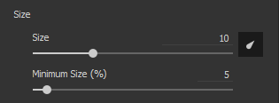

New Size and Flow Minimum parameters
You can now specify the minimum size and the minimum flow of the tool when Pen Pressure is enabled. This parameter works as a percentage based on the current maximum size/flow defined. These settings are automatically calibrated when using a Photoshop brush preset.
